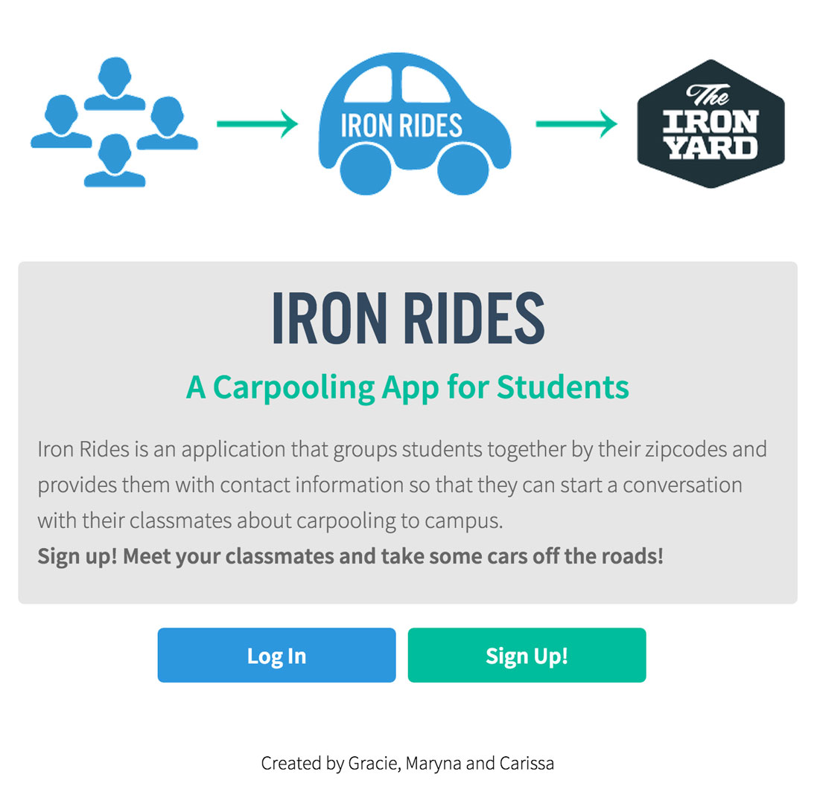
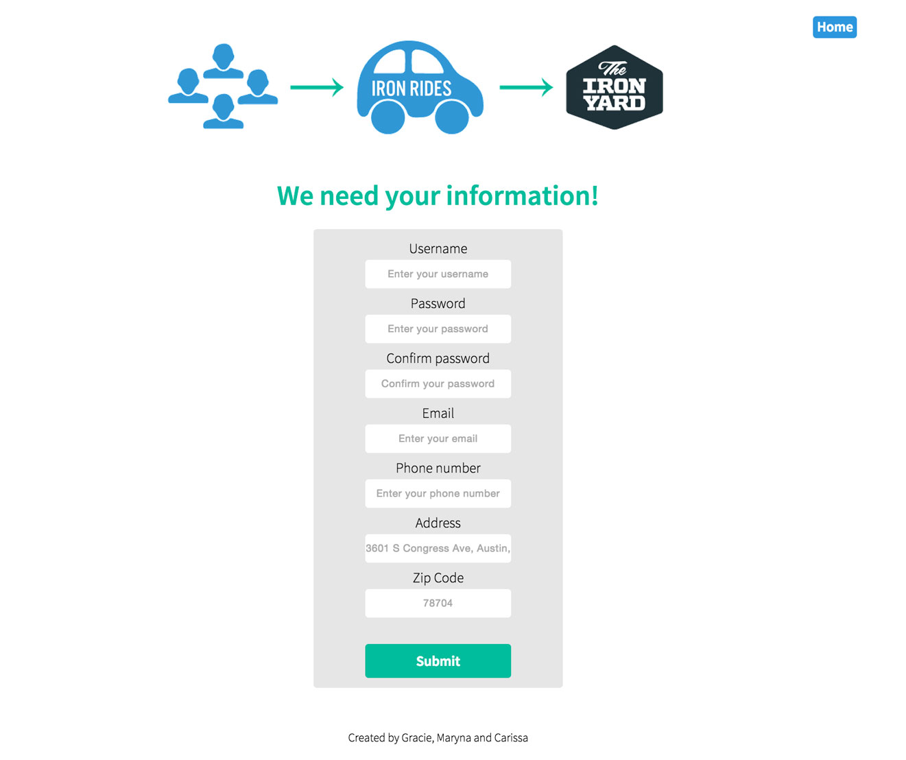

CARISSA MELANSON
UI/Graphic Designer
Iron Rides



Project Brief
This project will always hold a special place in my heart beacuse it was my first hackathon project. I pitched an idea for a campus carpooling app and recruited a front end developer and a rails developer to help me create it in 72 hours! I was the lead designer on the team and created style tiles and vectors for the site. I also wrote html in React and styled it in Sass.
Tools Used
HTML, Sass, Typekit, Responsive Web Design, Photoshop, Illustrator